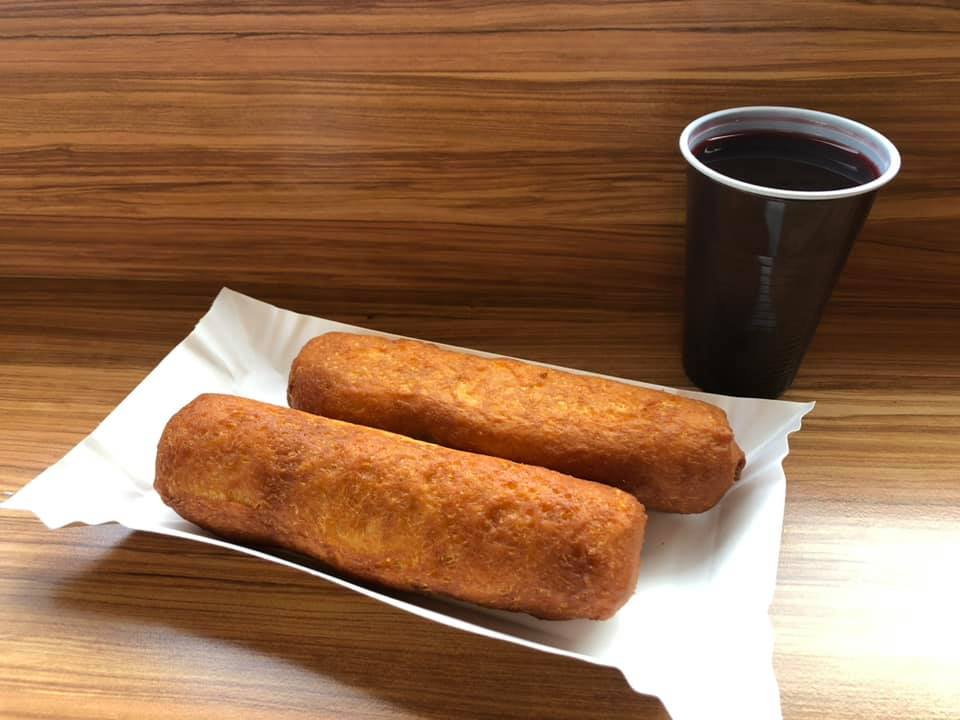

Pasztecik Szczeciński
Pasztecik szczeciński – rodzaj smażonego ciasta drożdżowego nadziewanego mieszankami mięsnymi bądź jarskimi, danie typowe dla Szczecina.
Nadzienie składa się najczęściej z wieprzowiny połączonej z wołowiną, kapusty z grzybami bądź sera i pieczarek.
Najstarszy lokal serwujący paszteciki został założony w 1969 roku, do produkcji specjału używał maszyny sprowadzonej w 1971 roku z radzieckiego demobilu.
W 2008 roku pojawiła się propozycja Urzędu Marszałkowskiego Woj. Zachodniopomorskiego, aby pasztecik wpisać na Listę produktów tradycyjnych, chronionych przez unijne prawo.
Ostatecznie pasztecik znalazł się na liście 22 grudnia 2010 roku, co oznacza, iż wszyscy producenci muszą ściśle przestrzegać jego receptury.
W roku 2015 władze wojewódzkie ogłosiły, że dzień 20 października obchodzony będzie jako Dzień Pasztecika Szczecińskiego.

Menu
Pasztecik:
z mięsem 4.00zł
z mięsem i pieczarkami 4.00zł
Tosty:
ser z pieczarkami 7.00zł
ser z pieczarkami i szynką 7.50zł
ser z pieczarkami i salami 8.00zł
ser z pieczarkami, kebab 8.50zł
Zestawy:
Trzy Paszteciki i Barszcz 14.00zł
Napoje:
Napoje ciepłe:
Barszcz czerwony 3.00zł
Kawa czarna 4.00zł
Kawa z mlekiem 4.00zł
espresso 4.00zł
cappucino 4.00zł
kawa machia 4.00zł
Napoje zimne:
Coca cola 500ml 5.00zł
Fanta 500ml 5.00zł
Mirinda 500ml 5.00zł
Sprite 500ml 5.00zł
Oranżada 1l 3.00zł
Tymbark 500ml 3.00zł
Oshe 500ml 4.00zł
Woda mineralna 500ml 1.50zł
Kubuś 400ml 2.50zł
frugo 330ml 2.50zł
tiger 250ml 3.00zł
Coca cola 200ml 2.50zł
Tymbark 200ml 2.00zł
Kontakt:
Godziny otwarcia:
poniedziałek-piątek: 10:00-18:00
sobota-niedziela: Zamknięte
Telefon:
531 500 030
Adres:
Rondo Ułanów Podolskich 21, Szczecin Zdroje